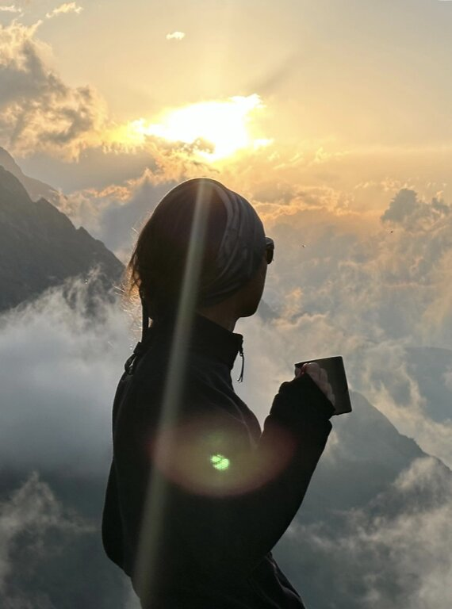

Capturing the soul of the moment.
Hello, I'm Anano.
My journey began with a curiosity about how light defines our memories.
Based in Tbilisi, I navigate the intersection of nature, human connection, and raw storytelling.
I don't just take photos; I curate the feeling of being there.
My Philosophy
Observation
I believe the best images are not taken; they are observed. I strive to disappear into the background, catching genuine candid expressions that define the truth of a moment.
Connection
Photography is a shared experience. I don't just photograph subjects; I build stories with people, focusing on the quiet, unfiltered emotion behind the eyes.
Portraiture
Event Coverage
Nature
Commercial